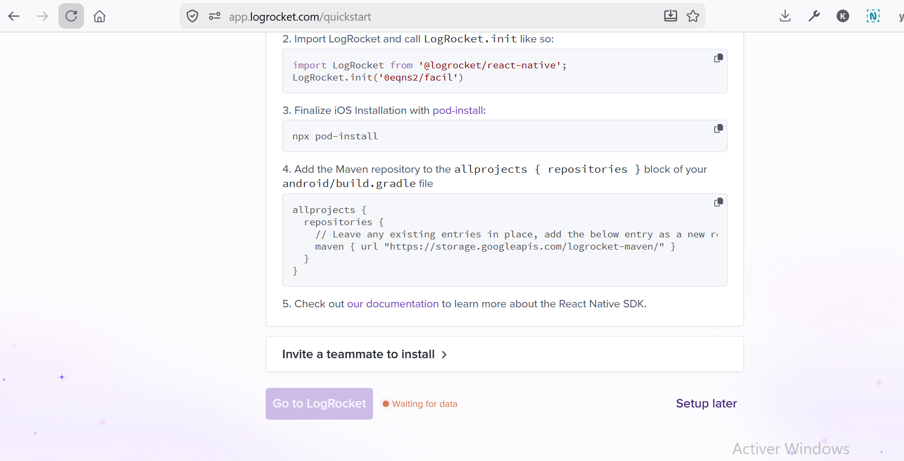
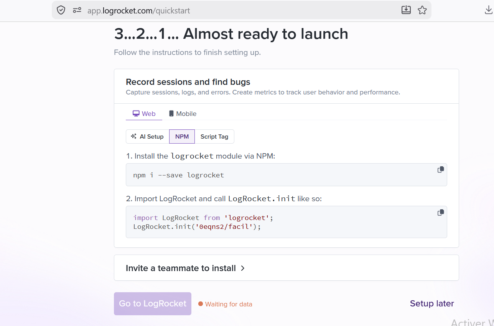
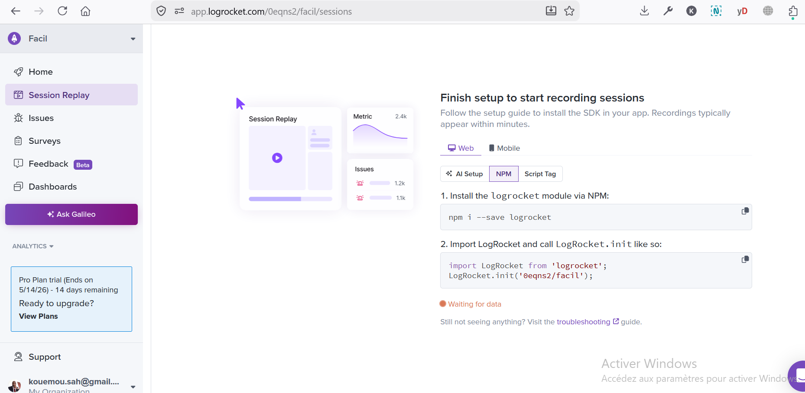
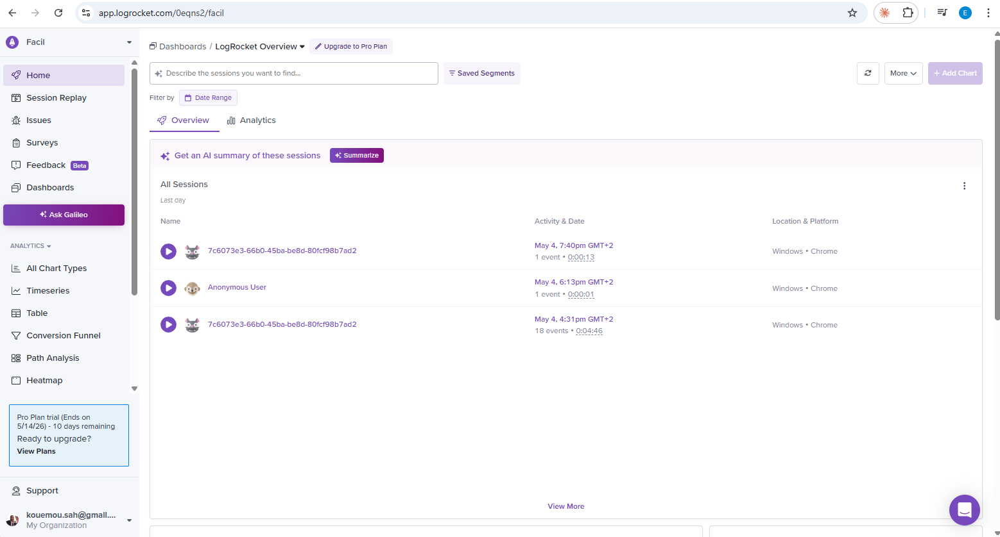
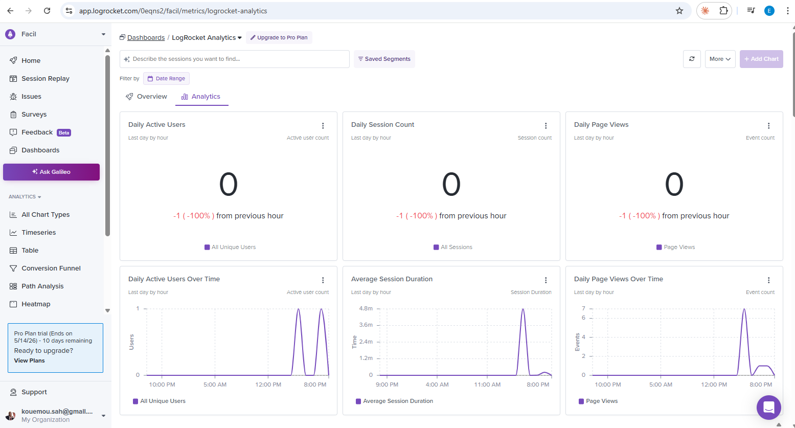
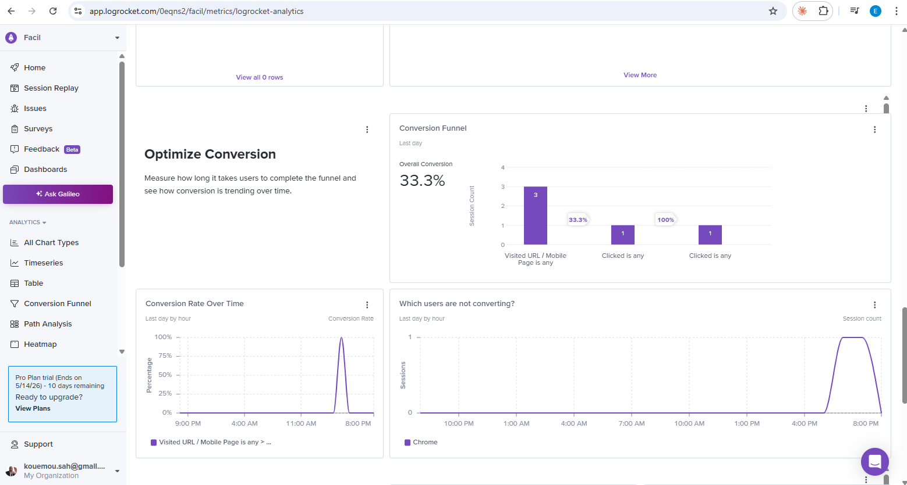
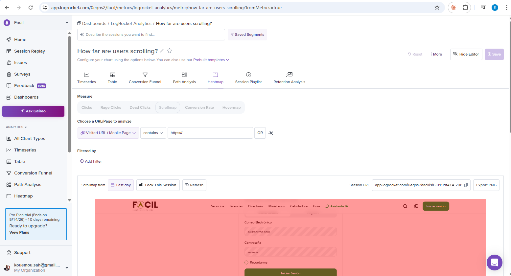
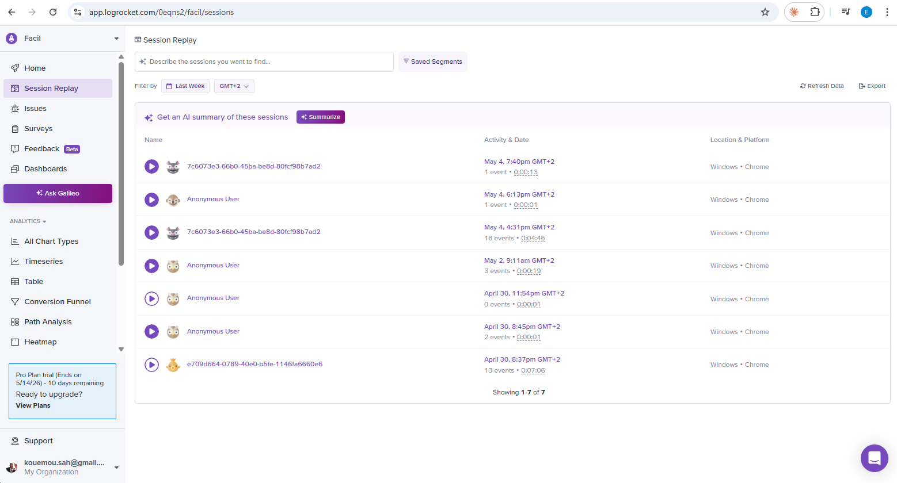
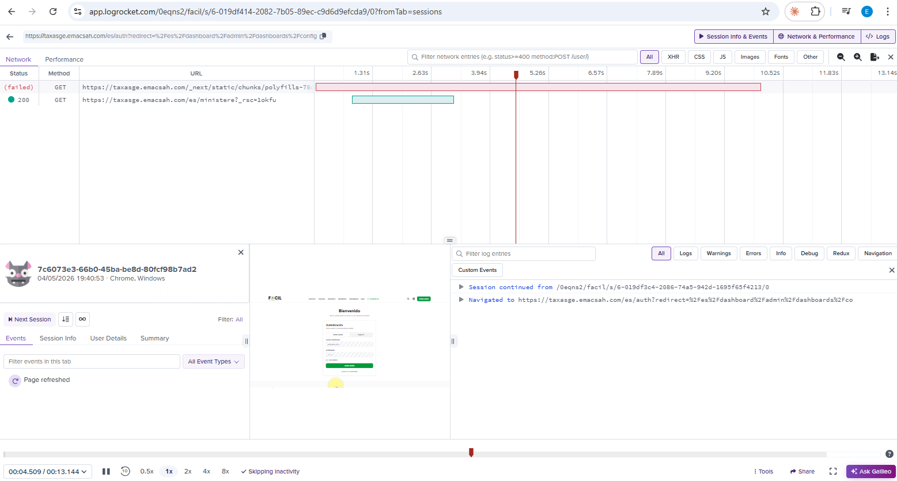

LogRocket — Session Replay & Privacy-First Observability
LogRocket is wired across 3 surfaces (web, mobile, inspector) as the «CCTV» of the Facil platform. While Sentry catches crashes after they happen, LogRocket records what the user did before, during, and after — making citizen-reported bugs and UX frictions reproducible without ever asking the user to repeat steps.
1. Why LogRocket (and why not just Sentry) #
LogRocket and Sentry look similar at first — both «catch errors» — but they solve different problems. Picking the right one under pressure is half the on-call skill.
| Sentry | LogRocket | |
|---|---|---|
| Capture cadence | At error time only | Continuously, like a CCTV |
| What's stored | Stack trace + 60 s of breadcrumbs | Full session video — clicks, scrolls, network, console, redux/zustand |
| Pricing model | Per error event | Per session (one user visit = one session) |
| Free tier | 5K errors / month | 1K sessions / month |
| Best for | "Why did this crash?" — root-cause | "What did the user do before X?" — reproduce a parcours |
| Trigger | captureException(err) or auto-uncaught | SDK init at boot → captures until session end |
| Primary UI | Issues / Errors list | Sessions list with replay video |
Why we run both
- Sentry's strength is alerting + grouping. When error rate spikes, Sentry pings the on-call and dedupes by stack-trace fingerprint. Cheap, low-volume.
- LogRocket's strength is context. When a citizen says "the app crashed when I clicked submit", you replay that exact session and see the bug, not just the symptom.
- They complement each other: Sentry detects → LogRocket explains. The bridge (
bridgeLogRocketToSentry()) attaches the LogRocket session URL to every Sentry event, so an Issue in Sentry deep-links straight to its replay in one click.
"I have Sentry, I don't need LogRocket" — wrong. UX bugs (frozen UI, wrong navigation, confusing form) leave no Sentry trace because no exception is thrown. LogRocket is the only tool that captures non-error sessions, which is exactly what you need to diagnose a citizen complaint about the wizard.
2. Architecture — 3 surfaces, 1 SDK family #
Per-surface init policy
| Surface | Init location | Auto no-op when | Default capture |
|---|---|---|---|
| Web | <LogRocketProvider> mounted in Providers.tsx |
NODE_ENV=development OR empty NEXT_PUBLIC_LOGROCKET_APP_ID OR SSR (!window) |
Capture all visible text; opt-out via data-private="redact" |
| Mobile | initLogRocket() in <DeferredEffects> of _layout.tsx |
__DEV__=true OR empty EXPO_PUBLIC_LOGROCKET_APP_ID |
Redact all text; opt-in via <LRAllow> |
| Inspector | Same as mobile | Same as mobile | Same as mobile (RN-default redact) |
Why opposite defaults (web vs mobile)?
Web is desktop, often used by agents on shared machines — capturing is more useful for triage
and the desktop browser doesn't usually contain the same intensity of PII as a personal device.
Mobile is a personal device with sensitive forms (passport, NIF, address) — redacting by default
is safer. The trade-off cost: replays on mobile are less informative until you audit each screen
and wrap non-PII zones with <LRAllow>.
3. Privacy-first design (PII redaction) #
Facil processes citizen passports, NIFs, declarations, payment receipts. PII leakage to a third-party SaaS is a regulatory risk. The SDK wrappers enforce 4 layers of defense, each independently sufficient (defense-in-depth):
- L1 — SDK options:
inputSanitizer: true(web) /textSanitizer: 'excluded'(mobile) masks raw user input before it ever leaves the device. - L2 — Network sanitizers: every request strips
Authorization+Cookieheaders; bodies are dropped on/auth/login,/auth/register,/auth/password-reset,/auth/2fa; response bodies are dropped on token-issuing endpoints (/auth/login,/auth/refresh,/auth/2fa). - L3 — DOM / JSX opt-in: app-team responsibility — tag PII fields explicitly.
data-private="redact"on web;<LRAllow>wrapping non-PII content on mobile (inverse: anything not wrapped stays masked). - L4 — Identify policy: only
id + role + localeare sent viaLogRocket.identify(). Never email, phone, NIF, address. Enforced via TypeScript signature on the wrapper.
// L3 — Web: tag PII fields explicitly
<div data-private="redact">
NIF: {user.nif}
</div>
<input data-private="redact" value={passport} />
// L3 — Mobile: opt-in safe content; everything else stays masked
import { LRAllow } from '@logrocket/react-native';
// Safe — button label, navigation, public price:
<LRAllow><Text>Continuer</Text></LRAllow>
// Default behaviour — masked:
<Text>{user.nif}</Text>Other privacy-relevant defaults
shouldCaptureIP: false(web) /enableIPCapture: false(mobile) — never geolocate users.console.isEnabled = { warn: true, error: true, log: false }— drop developer logs that may carry sensitive context.release: NEXT_PUBLIC_BUILD_VERSION— per-build session attribution for regression hunting.
4. Repository wiring (file-by-file) #
Web (packages/web/)
src/core/observability/logrocket.ts— SDK wrapper (init, identify, track, capture, sentry bridge).src/components/observability/LogRocketProvider.tsx— client component mounted inProviders.tsx.src/core/auth/storage.ts—identifyLogRocketplugged intosetAuthData/clearAuthData..env.example—NEXT_PUBLIC_LOGROCKET_APP_ID,NEXT_PUBLIC_BUILD_VERSION.Dockerfile—ARG NEXT_PUBLIC_LOGROCKET_APP_ID+ENVline..github/workflows/deploy-frontend-staging.yml— passes_NEXT_PUBLIC_LOGROCKET_APP_ID=${{ secrets.LOGROCKET_APP_ID }}to Cloud Build.
Mobile (packages/mobile/)
src/core/observability/logrocket.ts— LogRocket RN wrapper.src/core/observability/sentry.ts— companion Sentry RN wrapper.src/app/_layout.tsx—initSentry()+initLogRocket()inside<DeferredEffects>.src/core/auth/auth-provider.tsx—setSentryUser+identifyLogRocketco-located.app.json—expo-build-propertiesplugin:minSdkVersion: 25+extraMavenRepos(informational in non-CNG mode).android/build.gradle—ext.minSdkVersion = 25+ Maven repo entry (canonical in non-CNG mode — committed natives).eas.json—EXPO_PUBLIC_LOGROCKET_APP_IDinpreview+productionenv blocks..easignore— overrides.gitignoreso/androidships to EAS (without it:ENOENT gradlewat FIX_GRADLEW phase).
Inspector (packages/inspector/)
Same files as mobile. No Sentry RN yet — bridgeLogRocketToSentry() is a no-op stub awaiting Sentry inspector integration.
5. Secret topology #
Origin of truth: Google Cloud Secret Manager (project taxasge-dev).
The logrocket-app-id secret is mirrored to GitHub repo secrets and EAS env vars,
stored as plaintext deliberately — the App ID is baked into the client bundle
and visible in DevTools network anyway. Mirroring keeps a single rotation point.
Full secret topology + multi-cloud (AWS / Azure / VPS) migration: see .claude/plans/OBSERVABILITY_STACK.md §2 / §5.
6. Daily usage flows #
Flow 1 — A user reports a bug ("L'app a planté quand j'ai cliqué sur soumettre")
- Open LogRocket dashboard → Session Replay.
- Filter by
user_id(the value sent viaLogRocket.identify()— not email, by design, since email is PII). If you only have an email, look up the user_id in the backend admin UI first. - Click the most recent session in the result list.
- The replay video shows the exact parcours: clicks, scrolls, the form they filled, the moment of the crash.
- The right-side panel mirrors a DevTools view, time-aligned with the video — console errors, network requests, redux/zustand state.
- Click the failed request in the network panel → see request body + response → diagnose the cause without ever reproducing the bug.
Why not Sentry first: Sentry fires only if the bug throws an actual exception. UX bugs (frozen UI, wrong navigation, confusing form) leave no Sentry trace. LogRocket captures all of those.

Flow 2 — A production error spike
Sentry alert: "TypeError: Cannot read property 'name' of undefined — 12 occurrences in 5 minutes".
- Sentry Issues → click the alert → see stack trace + frequency over time + which release introduced it.
- Open one of the affected sessions in LogRocket via
event.extra.logrocketURL(the bridge link). - LogRocket replay shows the sequence: user navigated to
/services, clicked search, typed "passport", clicked one result. Network panel revealsGET /api/services/12345returnednullinstead of the expected object. - You now know: backend regression, not a frontend bug.
- Roll back the backend release OR write a defensive frontend null-check.

Flow 3 — Optimising a funnel drop-off
"Why do 80% of users abandon at step 3 of the wizard?"
- Find a custom event already wired through
trackLogRocket()— e.g.wizard_step_completedwith{ step: number }. - LogRocket Dashboards → create a funnel:
wizard_step_completed(step:1) → step:2 → step:3 →wizard_submitted. - Funnel shows: 100% → 95% → 85% → 15%. Massive drop at step 3.
- Filter sessions: those that hit step:3 but never
wizard_submitted. Sample 10 replays. - You observe a pattern: 6 of the 10 users stare at the "NIF" field for > 30 s, then abandon. The label is too technical.
- Ship a clearer label + tooltip. Re-measure the funnel a week later.
Why not Sentry: nothing crashed. There's no exception. This is a UX diagnosis pure and simple.

7. LogRocket dashboard tour #
The LogRocket UI at app.logrocket.com/0eqns2/facil exposes 5 main sections:
| Section | Purpose | When to use |
|---|---|---|
| Session Replay | Per-user visit replays with timeline of console + network | Citizen complaint, UX bug, intermittent crash |
| Issues | JS errors auto-detected, similar to Sentry but with a session attached | Triage non-Sentry-alerted errors |
| Dashboards | Custom event aggregations (counts, funnels, conversion rates) | Funnel drop-off, A/B comparison |
| Surveys / Feedback | NPS surveys + in-app feedback widgets (not used today) | UX research, post-launch sentiment |
| Settings → Integrations | Slack / Jira / Linear hooks (free tier limited) | Push critical issues to the team chat |






8. The Sentry bridge #
Activated 2026-04-30 once @sentry/nextjs was wired (web side). The bridge attaches the
LogRocket session URL to every Sentry event so an Issue in Sentry deep-links straight to its
replay in one click — eliminating the context-switch cost between two tools.
// packages/web/src/core/observability/logrocket.ts
export function bridgeLogRocketToSentry(): void {
if (!isLogRocketActive()) return;
LogRocket.getSessionURL((sessionURL) => {
Sentry.getCurrentScope().setExtra('logrocketURL', sessionURL);
});
}
Why this ordering: getSessionURL() fires after the first
network flush (~2-5 s into the session). Sentry events can be captured immediately on page load.
Initialising LogRocket first and registering the bridge inside its init() means: by
the time the bridge hooks in, Sentry is already listening; the bridge call site lives next to the
LogRocket init it depends on; no circular dependency.
Mobile bridge: stub today. Activates the day Sentry RN events on mobile/inspector should carry a LogRocket session URL. Same 4-line edit as web once both SDKs are confirmed live.
9. Limits, traps & roadmap #
Known limits (honest)
- Free tier 1K sessions / month — shared across web + mobile + inspector. At current scale (~20 staging users) ample headroom; production scaling needs Team plan.
- Source-map upload not wired — LogRocket stack traces are minified. Plan: reuse Sentry CLI sourcemap upload (
@sentry/cli) at build time. Tracked: OBSERVABILITY_STACK.md §8. - Mobile redact-by-default — replays informative only on screens audited and wrapped with
<LRAllow>. Audit cadence: per feature shipping. - No on-prem free tier — air-gapped deployments must disable LogRocket entirely.
Known traps
| Symptom | Root cause | Fix |
|---|---|---|
uses-sdk:minSdkVersion 24 cannot be smaller than 25 | LogRocket RN requires Android API 25+ | Bump ext.minSdkVersion to 25 in android/build.gradle + app.json (cf. OBSERVABILITY_STACK.md §7.6) |
ENOENT gradlew at EAS FIX_GRADLEW phase | /android in .gitignore strips natives from EAS upload | Add .easignore overriding .gitignore for EAS uploads (cf. OBSERVABILITY_STACK.md §7.2) |
Frontend lacks LOGROCKET_APP_ID in bundle | --build-arg not passed at Docker build | Cloud Build YAML must pass _NEXT_PUBLIC_LOGROCKET_APP_ID=${{ secrets.LOGROCKET_APP_ID }} as substitution (cf. OBSERVABILITY_STACK.md §7.5) |
| Mobile sessions all anonymous | identifyLogRocket() not called in auth provider | Wire in auth-provider.tsx alongside setSentryUser |
| Replays show only blank fields on mobile | Default textSanitizer: 'excluded' + no <LRAllow> wrapping | Audit screens; wrap non-PII text in <LRAllow> |
Roadmap
- Sentry RN on inspector — activate
bridgeLogRocketToSentry()body in inspector wrapper. - Source-map upload — via reused Sentry CLI in CI for both web and mobile.
- Auto-rotation cron for
logrocket-app-id(low cadence — public anyway). - Funnel templates — pre-built funnels for the 4 critical user journeys (signup, payment, wizard, document upload) with target conversion thresholds + alerts.
Reusable agent for other projects
Distilled into infra/observability/LOGROCKET_OBSERVABILITY_AGENT.md — a 7-phase
reproducible agent invokable via /logrocket-observability slash-command. Works on any
web (Next.js / Vite / CRA), mobile (Expo / bare RN), or hybrid project. Enforces 8 active
guardrails (PII redaction, gating, identify policy, secret topology, source-map drift, etc.).
Related documentation
.claude/plans/OBSERVABILITY_STACK.md— full reference (~750 lines): secret topology, multi-cloud migration, traps catalogue..claude/plans/OBSERVABILITY_QUICKSTART.md— hands-on tutorial for new contributors..claude/plans/OBSERVABILITY_DASHBOARDS_AND_SENTRY_BACKEND.md— companion doc on the Sentry side (8 dashboards, alert rules).- Grafana Dashboards — the analytics layer (decision-driven KPIs), complementary to LogRocket (forensic replay).